也紀念我們永遠的朋友 李士傑先生（Shih-Chieh Ilya Li）。
資訊教育的省思和建議
◎ 現況和主要問題
我國自民國八十六年起，國民中學開始上電腦課；自民國九十年起，國民小學依據九年一貫暫行綱要開始實施資訊教育，若自國小全面實施資訊教育來算，資訊教育已經推行將近十年，在提昇全民資訊應用能力方面來說，實有莫大之功。
雖然有功，然而卻也有許多的不良後遺症。從歷年九年一貫綱要的修訂以及個人在實務方面的觀察來看，我認為已經到了該要徹底檢討的時候。
值得大家注意和檢討的地方很多，基於個人學識、經驗有限，本文只舉幾個我認為重要的地方。第一個要檢討的，就是偏離資訊處理本質的教學目標。
資訊一詞的定義，頗為分歧，在不同領域內的定義都不大一樣。若以目前大專用的資訊（或電腦）概論的教科書為準，對於資訊的定義八九不離十都是：「將資料經過特定處理後，就會變成有組織、有意義且有用的資訊。」若以此為標準，資訊處理就是資料的處理方法、技術，資訊處理就是在特定的目的下運用這些方法、技術，將蒐集來的資料加以處理，進而得到對使用者有用的資訊。
若以此來定義資訊處理，範圍稍嫌太小。人們對於資訊的應用，不只是生產出資訊而已，往往還得要有適當地傳播，才會產生預期的作用。基於此，或許我們可以說資訊處理的範圍當從資料的產生和蒐集開始，經過特定目的的篩選和處理之後，必要時會加以傳播的相關方法和技術。這一過程中，可使用的方法、技術，並不只侷限於電腦，其他如經過心理的意識作用、紙筆紀錄和計算、口語傳播、書信傳播、簡訊、電話溝通、廣播、電視和網路等，都是可運用並能達到相關步驟所要求的目的。
若以此來檢視教育部所公佈的九年一貫綱要重大議題之資訊教育，很輕易就能發現其問題所在。其基本理念和課程目標內所使用的詞是資訊科技，然並未明定所使用的科技是那一種，但是從核心能力、學習內涵及分段能力指標的內容來看，相當明確指出採用的技術就是電腦。以下所列，就是最早接觸資訊科技的三、四年級學生，所該達到的分段學習能力指標：
1-2-1 能瞭解資訊科技在日常生活之應用。
1-2-2 能瞭解操作電腦的姿勢及規劃使用電腦時間。
1-2-3 能正確操作及保養電腦硬體。
1-2-4 能正確更新與維護常用的軟體。
1-2-5 能瞭解資料安全的維護並能定期備份資料。
2-2-1 能遵守電腦教室（或公用電腦）的使用規範。
2-2-2 能操作視窗環境的軟體。
2-2-3 能正確使用儲存設備。
2-2-4 能有系統的管理電腦檔案。
2-2-5 能正確操作鍵盤。
2-2-6 能熟練中英文輸入。
3-2-1 能使用編輯器進行文稿之編修。
3-2-2 能操作印表機輸出資料。
3-2-3 能操作常用之繪圖軟體。
4-2-1 能操作常用瀏覽器的基本功能。
5-2-1 能遵守網路使用規範。
（資料來源：97 年國民中小學九年一貫課程綱要重大議題（資訊教育），下載網址）
這種課程基本理念、目標和學習指標之間定義不一致的情形，終於在 97 年國民中小學九年一貫課程綱要重大議題（資訊教育）修改為一致：「本課程的設計首先著重在使學生瞭解資訊科技與生活的關係，認識電腦硬體及操作環境，學習基本應用軟體的操作，以及網際網路的使用。其次強調如何使用資訊科技工具有效的解決問題，並進一步養成學生運用邏輯思維的習慣。最後引入資訊科技與人類社會相關的議題，以養成學生使用資訊科技的良好態度與習慣。」（資料來源：國民中小學九年一貫課程綱要重大議題（資訊教育）的基本理念，下載網址同上述之能力指標）
所以從一開始，我國的中小學資訊教育就已經窄化為電腦軟硬體的操作學習，並非如一開始所說的資訊處理。這有什麼缺點？這讓許多人把資訊處理和電腦軟硬體的操作劃上等號，甚至認為只要不是採用電腦，就不算資訊處理。以現今的科技發展而言，資訊處理的工具已經相當多樣化，如許多人已經把日常的資訊處理，從電腦移到行動電話上。以如此窄化的課程內容，如何能建立正確的資訊處理概念呢？
課程綱要的另一個問題是，只強調資訊科技的好處，卻很少提到該注意電腦科技的缺點。例如改用電腦來撰寫報告，優點是可以結合各種不同類型的素材，而且也可以編排的很美觀，可以讓學生把觀點表達的更清楚、更完整。然而實際狀況卻不是如此，許多學生反而更不會把所蒐集到的內容先行消化之後再編寫，而是利用電腦科技完美無缺的複製、貼上功能，編輯出一份自己也不清楚內容細節是什麼的報告。
此外，電腦容易修改和編輯的特性，也讓學生漸漸失去在腦海內先行組織內容的習慣和能力，在口語表達、實際動筆寫作文章方面，經常發生語句不通順、欠缺邏輯的現象。（註：傳統的紙筆寫作，修改內容之後，如果要有整齊、清潔的版面外觀，必須將完稿重謄一遍，在這過程中等於檢查與複習內容及邏輯是否通順）
凡事有正面必有其負面，不能一昧強調資訊科技的優點而忽略傳統方式的好處，早期為了讓學生早日習慣資訊科技的應用，甚至有強迫學生放棄傳統手寫方式而一律改用電腦寫報告的情形，其結果就是抄襲更嚴重，內容組織能力更加弱化，這種情形在網路風行之後的年代，更是普遍。（當然，願意認真學習的人所受的影響比較輕微）
第二就是貪多嚼不爛的教學內容，或許該說想教的內容遠多於可用的教學時數。為了讓大家瞭解問題到底在哪裡，我們分別來看看授課實數到底有多少，而授課內容又是什麼。首先來看授課節數。在民國八十九年的「國民教育九年一貫課程暫行綱要」中，列有建議的授課節數，如下表：
| 學年 | 三 | 四 | 五 | 六 | 七 | 合計 |
| 學習節數 | 20 | 20 | 20 | 20 | 40 | 120 |
（目前的綱要已無此表，此處所引用的是國立台灣師範大學資訊教育學系何榮桂教授所發表的「九年一貫資訊教育課程規劃與相關問題」一文所列
至於目前的綱要則沒有針對每一學年要安排多少節數，而是改為不同的能力指標，建議用多少的教學節數來達成，如「3-2-1 能使用編輯器進行文稿之編修。」的建議授課節數為 11-12 節。至於學校如何安排，則由各校自行決定。實務上，各學習領域所需的節數都不少，電腦教學的節數幾乎不可能按照綱要的建議來排課，所以我認為這樣的建議形同具文。（以新版的綱要來說，四年級的電腦課程最少要安排 32 節課，遠比舊版還多）
假設學校真能如綱要所建議的 5 年 120 節來安排，那麼要教哪些東些呢？從分段能力指標來看，光是軟體的部份最少就要教九套：
1. 作業系統（2-2-2 能操作視窗環境的軟體。2-2-3 能正確使用儲存設備。2-2-4 能有系統的管理電腦檔案。）
2. 文書處理器（3-2-1 能使用編輯器進行文稿之編修。）
3. 繪圖軟體（3-2-3 能操作常用之繪圖軟體。）
4. 瀏覽器軟體（4-2-1 能操作常用瀏覽器的基本功能。）
5. 簡報軟體（3-3-2 能利用簡報軟體編輯並播放簡報。）
6. 影音多媒體編輯軟體（3-3-3 能使用多媒體編輯軟體進行影音資料的製作。）
7. 程式語言相關軟體（2-4-1 能認識程式語言基本概念及其功能。）
8. 試算表（或文書處理器）（3-4-1 能利用軟體工具分析簡單的數據資料。3-4-2 能利用軟體工具製作圖與表。）
9. 資料庫軟體（3-4-3 能認識資料庫的基本概念。3-4-4 能建立及管理簡易資料庫。）
坦白說，以上九大項軟體，即使是專業的資訊從業人員，都不見得樣樣都精通！（尤其是程式語言和資料庫，鮮少有人敢說精通），更何況是一個只接受過不到 120 小時的國中畢業生？（一節課大約只有45分鐘，不到1小時）更何況，綱要內所要求的學習內容還不只這些！就實務來說，如此短的教學實數，充其量只能教學生各個軟體的一點皮毛，學生是否真能像基本理念和課程目標所要求的理念，實在令人存疑。
別忘了，人力和時間都是有限的，樣樣通、樣樣鬆！別再迷信大而無當的計畫！
第三個問題是教學過程只有操作而不注重創作。在教學之前，選擇什麼樣的軟體當教材是非常重要的。同一種功能的軟體，通常有很多種，有的注重能讓使用者自由設計，有些則強調能快速完成作品，只提供固定的範本或範例，使用者只能在預定的架構下，加入文字或圖片內容，沒有什麼自我創作的空間。
前一種軟體，通常是專業領域使用較多，功能多，養成教育的時間較長，好處是能培養學生的創作能力；後一種軟體通常是家用或業餘使用的軟體，功能簡易，短時間就能學會所有的功能操作，能夠很快做出作品，但無法培養創作的能力。
該用哪一種來教比較好？以綱要的目標來說，應該要選擇前一種，以教學實務來說，卻是後一種為主。為什麼？很顯然的，它比較能在有限的時間內教完，其次能夠讓學生輕易做出成品，能夠在短期內看到教學成果！
就算所選的是前一種軟體，在教學時數非常有限的情形下，老師們也只能擇要而教，否則就無法達成綱要的要求（話說回來，電腦課又不是升學科目，哪能跟正式學習領域的科目比？有安排就不錯了！）。所以在實務教學上，最常見的就是以一個精心設計好的範例，以步驟式教學，介紹各種功能的使用，至於軟體所需的背景知識、設計或編輯的基礎概念，軟體本身的使用邏輯等這些創作所必須的基礎知識，通常都會被犧牲掉！
這樣的教學應該是要培養電腦操作員吧？不是要培養具有使用資訊科技解決問題的新時代國民吧？（不知為何，這讓我聯想到十九世紀末，廿世紀初那些只能做枯燥且單調工作的可憐工廠女工）
第四，教學內容與生活脫節。
家有小學生的朋友常常會問我，到底國小的電腦課都上些什麼呀？為什麼叫我兒子／女兒幫我做個什麼東西或查個資料，他們都說不會？可是一整個晚上都窩在電腦前面，不知道在做什麼，叫他／她也沒反應卻三不五時對著螢幕笑！而且功課並沒有因為家裡有電腦而更好！
通常我會笑著告訴他，學校教很多，而且絕對沒有教家長認為會影響功課的線上遊戲、聊天室等等，而是教了前述那些「很正經」的東西。此時朋友不禁懷疑：「那我兒子／女兒的電腦應該很厲害呀！為什麼實際要做的時候，卻不是這麼一回事？」
此時我就會反問一些問題：「你上班都用哪些軟體？」朋友：「除了公司的專屬軟體外（註：通常都是指公司的會計、進銷存或報價相關的商用軟體），偶爾會用 Word。」再問：「簡報呢？試算表、影片剪輯、影像處理、寫程式、寫資料庫？」朋友開始驚訝：「誰會每天用 Word 呀？又有誰會每天用這些有的沒有的？」
「沒錯！這些東西不是每個人都會常用，只有在不同的產業內才會被天天使用。你的小孩又不是在專業領域內工作，你怎麼會期望令公子／千金對這些東西會熟到能隨時幫你完成所要的東西呢？」
俗話說：「業精於勤而荒於嬉」，經常使用的東西，我們自然會比較熟，許多人不是沒學過 Word 和 PowerPoint，但每逢要用時，卻只會套用範本，稍有變化就束手無策，原因無它，就是平常使用的機會不多，久而久之，某些功能就忘了。中小學學生何嘗不是如此？說到這，大家應該會想問：為何我國的資訊教育要教這些學生不常用的東西呢？
這是一個很難回答的問題，我嘗試去分析九年一貫綱要的內容，我發現有二個可能的答案：一是為了配合資訊融入各科教學，而不得不教某些軟體；二是為了配合現實環境的主流軟體。前者的明顯例子就是配合數學領域的試算表，後者則是 Word。（說真的，一提到文書處理器，多數人想到的就是 Word）
事實上，該教什麼東西，才能達到綱要基本理念的崇高境界：「如何使用資訊科技工具有效的解決問題，並進一步養成學生運用邏輯思維的習慣。最後引入資訊科技與人類社會相關的議題，以養成學生使用資訊科技的良好態度與習慣。」坦白說，沒有人能肯定。以我個人淺見，只有和日常生活問題相結合，從實際問題的解決開始，才能從實務中領會資訊科技的方便之處。
那麼，一般學生在生活中最常用的到底是什麼？其實每個人或多或少都不太一樣，男女也會有所差異。根據我的實際觀察和網路搜尋的結果，以下三大項是比較多人會用的：
一、網路的各式應用。主要的有下列八項：1、瀏覽器，尋找資料、網購；2、以即時通訊和同學、朋友聊天；3、P2P 檔案交換（此一類應用不全都是非法）；4、交友聊天室；5、論壇討論區；6、線上遊戲；7、寫部落格；8、到網路社交活動，好認識更多朋友。
二、影音娛樂：看影片和聽音樂。（這常常和前一項的 P2P 檔案交換結合一起應用）
三、相片管理：為了寫部落格、自拍或拍下特異景象等理由，不得不使用這一類軟體來管理相片。當然，這也常常結合網路應用，如直接使用 Google 的網路相簿 Picasa。（這一類的服務很多，在此僅列舉一例，大家不必斤斤計較）
這樣的結果，和資訊教育的內容大異其趣。奇怪的是，這些東西很多都是學校不教的，學生卻會用的比老師好……因此在輔助學習和實際應用之間，應該怎麼調整，值得大家思考。
第五個問題是教學對象軟體大多採用商業軟體。
多數的學校不會把自己所採用的教材上網公開（我也覺得這沒啥必要），但透過 Google 來搜尋，還是能發現某些學校會公告該校所使用的電腦教材。經過我的搜尋之後發現，多數學校採用的軟體都是商用軟體，很少採用自由軟體。下圖即是中部某國小的網頁，所列的全部都是商業軟體。
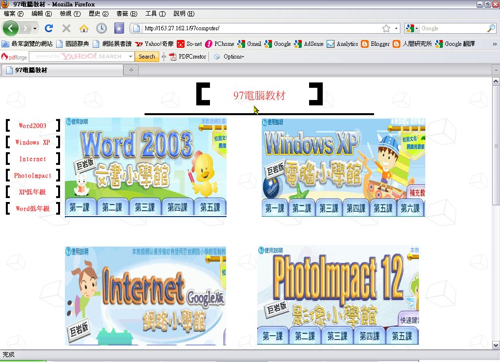
圖1：該校教材清一色都是商業軟體
另外我也在台北市教育局的網站下載『臺北縣（市）98學年度第1學期國民小學非審定本教科書「英語、電腦、本土語言教材及CD光碟」聯合議價結果一覽表』的檔案，發現其中將近九成教材的教學對象軟體都是商業軟體！部份內容詳見以下的圖：（註：原下載網頁，目前已經被拿掉，故改以截圖為證）
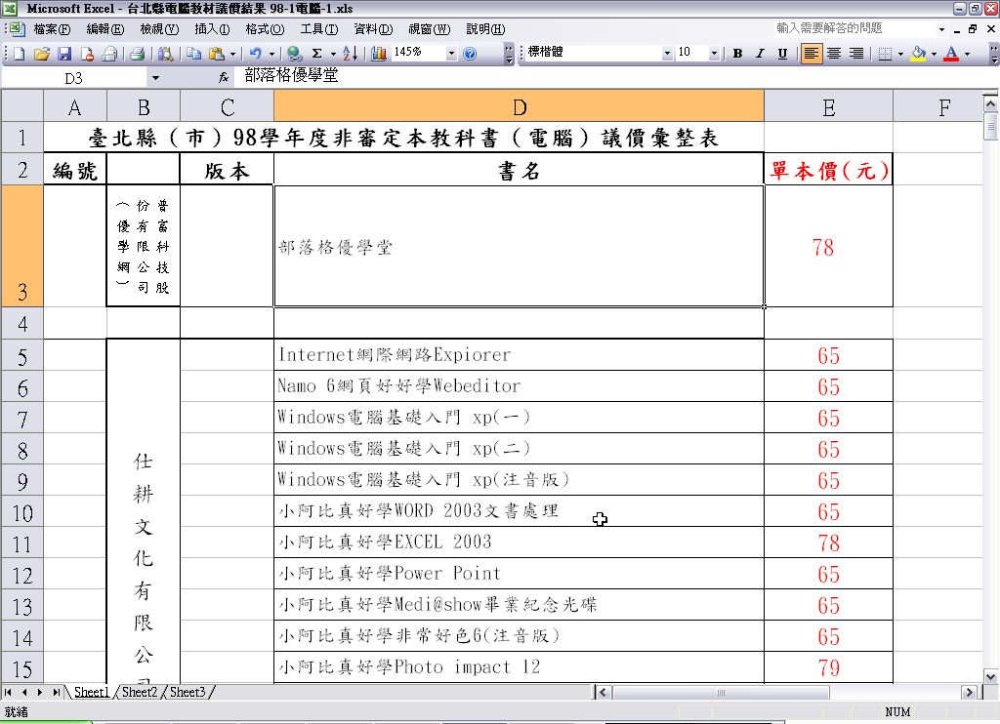
圖2：該表以公司為單位表列教材，多數公司都是以商業軟體的教材為主。
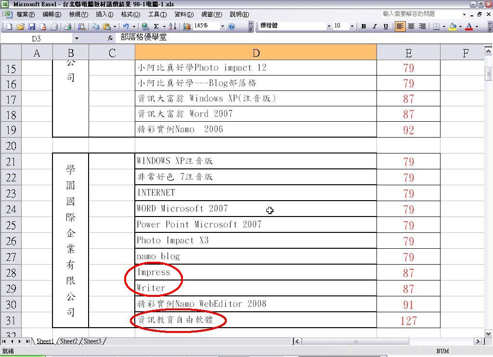
圖3：所列的第三家公司終於有自由軟體的教材。
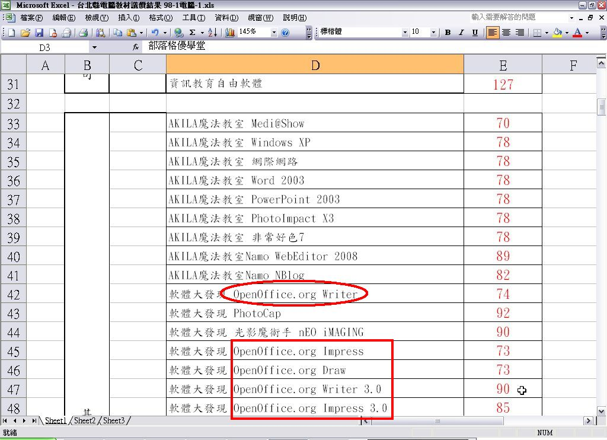
圖4：第五家公司終於有比較多自由軟體的教材，不過以 OpenOffice.org 為主。
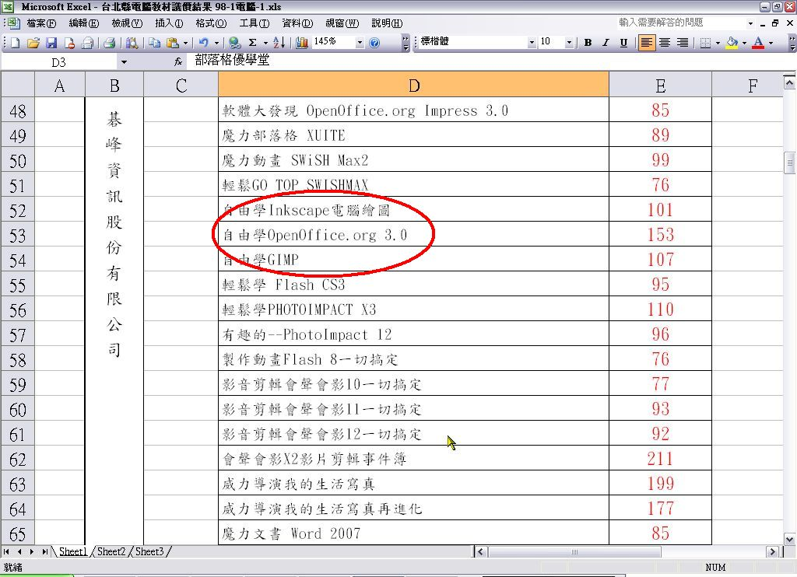
圖5：終於有OpenOffice.org以外的自由軟體。
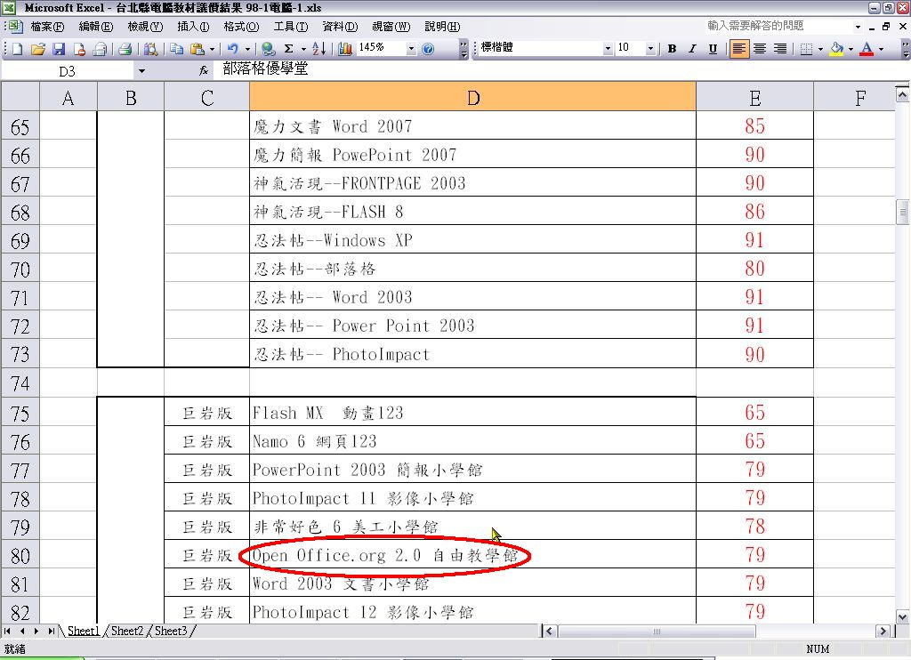
圖6：繼續往下看，偶爾才會出現一兩本和自由軟體有關的教材。
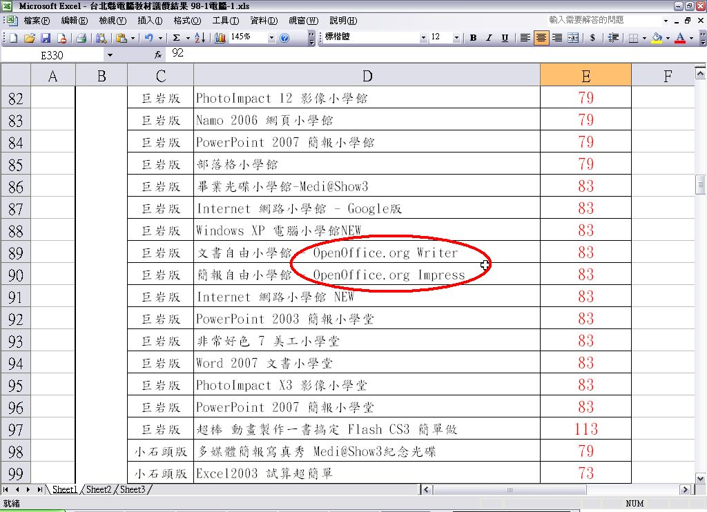
圖7：最常見到的就是 Writer 和 Impress！
在這個檔案內，總共列出 12 家廠商共 320 本通過議價的教材，其中只有 35 本和自由軟體有關。而這 35 本的教學對象軟體，以 OpenOffice.org 的 Writer 和 Impress 為主（有一本提到 OpenOffice.org Draw），其他的有繪圖軟體 Inkscape、影像處理軟體GIMP、網頁製作軟體 KompoZer、作業系統 Ubuntu等七套軟體。
難道自由軟體只有這些嗎？別說到 SourceForge.net 網站去找，光是 OSSF 的「自由軟體推廣應用光碟」專區裡，就有為數不少的自由軟體！（這些是經過篩選且日常常用的）
好吧！這又怎樣呢？使用商業軟體來教學到底有什麼壞處，值得筆者花許多時間「蒐證」？主要的理由如下：
一、沉重的成本負擔：如果學校選用的教學軟體屬於商業軟體，光是購買足夠的授權數量，起碼得要幾十萬到百萬台幣之間，在經費充裕的縣市或許辦得到，偏遠地區經費不充裕的學校呢？（據說花東地區的學校就是因此才會採用比較多的自由軟體）此外學生通常也會因為學校教什麼就買什麼來用（如果老師很認真的要求學生繳交作品，家裡怎可能不買相同的軟體？），這對一個家庭也是頗重的負擔。例如有學校會以 Adobe Flash 教動畫製作，而一套 Adobe Flash 教育版的售價大約要 11,700 元，就算其他軟體沒這麼貴，以前述八項軟體來說（瀏覽器目前都是免費），價低者不到千元，價高者超過二萬，我們以平均價格 3,000 元來計算（這樣算低估了），全部備齊最少也要24,000元！若再加上硬體的費用，購置一台可用的電腦，起碼也要 5 ～ 6 萬！（已經是大學畢業生起薪的 2～3 倍）以此而論，將只有富裕家庭的小孩玩得起電腦，經濟弱勢的孩子將可能因為知識數位化而更沒有機會脫離經濟困境！這樣子要如何縮短數位落差呢？如果默許學生使用盜版軟體，又何必費力推行智慧財產權的保護？唯有能免費使用的自由軟體才是最好的選擇！
二、版權的限制：商業軟體除了費用的門檻之外，另一大限制就是版權。版權的問題起碼有三個，一是備份。如果是光碟版，通常有保護機制，保護機制的破解，本身就有技術上與法律上的限制。當然，如果是下載版則無此問題。二是複製與散佈的限制。按照著作權法的相關規定，軟體是不能隨意複製並散佈，像什麼以「對社會有益而複製並散佈」的藉口是行不通的！結果就是不利於數位應用和學習的推廣。三，授權方式所帶來的使用限制。授權的方式通常採用永久授權、限時授權以及身份別的授權，不同的授權方式所需的金額不一，使用上也有所限制。如學生選用教育版，固然會便宜一些，但畢業失去學生身份後就不能再用！得另行購買「正確」的授權版本。（從另一個角度說，這不是一種浪費、剝削和不便嗎？）
三、應用觀念易受限：商業軟體的應用觀念，往往注重的是專業領域的應用，不然就是會遷就於軟體開發公司的特定技術、格式等，導致學生誤以為該軟體是唯一的解決方案和標準，其他的不是不知道，就是認為不好用。無形中，應用的概念就被窄化和制約，解決相關問題時非特定軟體不行。殊不知很多軟體都有替代方案，有些甚至比原先所認知者更簡便實在。因此，要培養學生利用資訊科技解決問題，首先就不該過早固定於專業領域的領導軟體，應該以應用概念和解決問題為主，培養正確的背景知識和應用的基礎知識。若有興趣，在未來的高等教育內，再以過去的基礎另行學習會比較好。
當然，選用商業軟體也不是沒有優點，起碼有以下二點：
一、教材取得相對容易：九年一貫教育的精神之一，是老師可以自編教材，然而學科多，各科教材的份量都不少，加上其他的文書作業（下一點將會提到），老師們其實沒有多少時間和精力自行設計、編輯教材，還不如選擇廠商提供的還比較省事！（相前面所說的 320 本教材，可以說想要什麼有什麼，除了自由軟體之外）。至於自由軟體或開源碼軟體，在網路上也能找到熱心人心編寫的教材，只是得花時間去找、篩選和彙編而已。
二、廠商提供教學支援：教材選定之後，老師們還得寫教學計劃送教育局備查，其他的週邊如學習單、評量等，也都要一一準備。如果選擇廠商的產品，廠商通常都會「義助」老師完成，減輕老師的負擔。（筆者以前受雇於廠商，編寫國中小教材的時候，這些都屬於工作的一部分）
通常，自由軟體的功能和實用性並不遜於商業軟體，而就應用觀念來說，二者在特定領域內也不會有大相逕庭的情形。最大的差別，當在購置成本和自由散佈二方面，而這二項卻是縮短數位落差的根本關鍵。
看過上述五大問題之後，筆者希望大家一起來思考：推行資訊教育的價值、目的和目標是什麼？我們希望培養學生什麼樣的資訊能力？課程設計應該要朝哪個方向改進？在不妨礙商業軟體的發展下，又該如何選擇適當的教學軟體？
關於這些問題，或許我們可以參考鄰國日本的作法。接下來，就是簡單地來看看日本情報教育大綱的內容，看看有哪些東西值得我們學習。
◎ 借鏡：日本的情報教育大綱
資訊教育，在日本稱為情報教育，目前在文部科學省的網頁所看到的，是平成 14 年 6 月（西元 2002 年 6 月）所公佈的情報教育大綱（有人翻譯為「情報教育指引手冊」）。其內容除了序章之外，共有八章，分別是：第一章 情報化的進展和情報化教育、第二章 初等和中等學校有關資訊教育的概念、第三章 兒童的學習活動和情報教育的實踐、第四章 情報教育的支援體系、第五章 情報通信環境的整備、第六章 學校和情報化、第七章 特教所需的支援、第八章 學校所需的支援體系。
這八章的內容，從基本的情報教育概念、內容開始，到學校和外部環境的準備，都有詳細的說明，甚至還考慮到特殊教育的需求，可說考慮的相當完備。（註：實施的對象包括小學校，〔相當於我國的國小〕、中學校〔國中〕、高等學校〔高中〕和盲、聾養護學校〔啟明、啟聰或特教學校〕）由於筆者的日文能力有限，加上翻譯軟體無法完全正確的翻譯，因此僅就幾項重要的內容略做說明，讓大家瞭解其重點。有興趣的朋友，請自行參考日文原檔。
首先，對於情報教育的目標、活用能力的定義和範圍，在此大綱內有相當明確的定義，底下就是從第一章所擷取下來的說明圖：
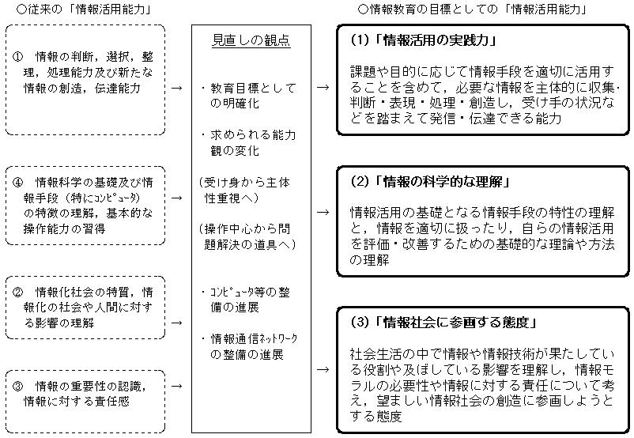
圖8：日本資訊教育的基本藍圖（資料來源：情報教育の実践と学校の情報化，第１章 情報化の進展と情報教育，P.12）
圖的左邊是所謂的「情報應用能力」，中間是「對應的觀念」，右邊則是「要達到的情報教育目標」，以淺顯易懂的方式將三者之間的關係勾勒出來。中間和右邊兩項，我國的資訊教育也有提到相關的內容，比較值得我們注意的是左邊的情報應用能力。
由圖的內容可知，日本認為情報的應用能力要從情報的判斷開始，經過篩選、整理和處理之後，還要有情報的創造和散布的能力，可說已經含括資訊處理該有的態度、方法和目的。其次要瞭解情報對於社會和人們的影響（也就是說要瞭解情報的作用，不可誤用）。接下來則是要對情報的重要性有所認識，並且要對自己發佈的情報負起該有的責任。最後則是要瞭解情報科學的相關知識、處理工具、方法的特徵（這裡提到要特別注意電腦這項工具。反過來說，日本並未限定一定要用電腦來處理情報），具備這些基礎知識後才開始學習相關的操作技巧。
和我國的資訊教育比較起來，日本對於資訊處理的範圍、方法和觀念上，顯然完備許多。要是把同樣的資料、資訊交給只會電腦操作的人，我相信所能發揮的功用會比受過情報教育之後的日本學生差。
至於情報應用能力的養成，在該大綱第三章 P81 內，有張言簡意賅的圖解：
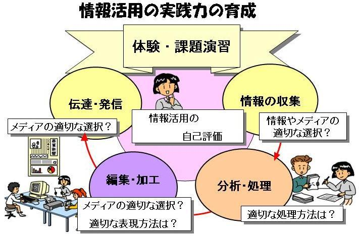
圖9：「情報應用能力的養成－學習如何問題解決」之圖解。
在課程設計上，會給與一個待解決的主題，然後經過五個步驟來解決問題。這五個步驟分別是：學生自行評估如何運用相關情報來達到目的、蒐集情報、分析與處理情報、整理和編輯情報以及傳達發佈情報等。而在每個階段都有其重要的關鍵問題，例如情報的蒐集要注意如何適當的篩選；分析處理時，要選擇什麼樣的方法比較好？整理編輯時要以什麼方式才能精準的表達重點？而傳達發佈時，又該採用什麼樣的媒體？這五個步驟，正是資訊處理中，對於問題解決方式的具體方法和流程。
在我國九年一貫課程綱要的資訊教育中，雖然提到要培養學生的問題解決能力（3-4-5 能針對問題提出可行的解決方法。3-4-6 能規劃出問題解決的程序。3-4-7 能評估問題解決方案的適切性。），卻沒有提到具體的概念、步驟和方法，說真的，我覺得這樣的能力指標和流於形式的口號實在沒兩樣。
在情報教育大綱內，針對上述圖解的步驟，列有幾個示範課程，其中有一個課程，我覺得最具有代表性。它的主題是，當接到一通電話時，該注意並處理哪些情報？
除了最基本的要注意來電的人是誰，說了什麼事，交待要做什麼，到什麼地方去做之外，還要加以紀錄（或記憶），如什麼時候接到的，發話和收話地點何在，什麼時候要完成所交待的事，最後要根據這些紀錄，規劃出合適的解決方法。以一個具體的例子來說（原例太長，筆者根據其精神，簡化為下列的例子），假設午休時間接到媽媽的來電，交代放學後順便去小阿姨家拿餅乾。這簡短的內容所表達的重點，可利用身邊有的紙、筆紀錄下來，另外根據所紀錄的內容來思考並規劃達成的方法。紀錄的內容如下：
1. 媽媽來電（問題來源）。
2. 放學後去小阿姨家拿餅乾（要做什麼事，並要紀錄相關的時間、地點和事物）。
3. 3 點放學，先打電話和小阿姨確認是否在家，如不在家，立刻回報給媽媽。（進行必要的確認）
4. 小阿姨若在家，就坐 3 點 15 分的電車前往小阿姨家。（選擇交通工具）
5. 拿了餅乾後，坐 4 點的電車回家，回家後把餅乾交給媽媽。（完成任務）
很多人大概會覺得這是個無聊的課程，但是仔細分析一下，這個簡短的例子可以讓大家清楚瞭解到，對於一個問題，應該注意的重點資訊有哪些（待解決的問題是什麼？相關的人、時、地、事、物又是什麼？），根據這些重點資訊，如何規劃出一個具體可行的解決方法，在這個例子內一覽無遺。
這不就是一般做事該有的基本方法和態度嗎？至於紀錄和規劃的工具只要最基本的紙筆即可，就能順利解決問題，不必非電腦不可。我認為，這就是最重要的基本功，只有做好這些基礎訓練，才有辦法進行後續更為高深的訓練、應用。
另外還有幾個例子，則是要告訴學生蒐集資料的方法，如到圖書館、美術館、博物館和具公信力的單位（學術單位、政府機構等）去找可靠得資料；情報處理的基本工具（如上例的紙筆）和其他各種工具（如手機、電腦和人腦）、散佈情報的各種媒體（如口語傳播、紙張、簡訊、電話、廣播、電視、網路等）等，並不侷限於特定的工具和方法，只要人們現實生活中可用的，無不鼓勵學生去嘗試應用。
反觀我國的資訊教育所要求的處理工具只限定於電腦一項，真的是太狹隘，很容易就會誤導與窄化學生關於資訊處理的觀念。大家不妨思考一下，難道我們接到媽媽的電話，手邊剛好沒有電腦（這事常有），是不是就無法紀錄媽媽交待的事情？沒有電腦，難道就沒辦法規劃出適合的解決方法嗎？
電腦固然是資訊處理一個強而有力的工具，但別把它當作唯一的工具和方法。資訊教育的目標，是要訓練人擁有資訊處理的相關能力和方法，不是訓練成電腦操作員！我想只要在這方面加以改進，我國學生的資訊應用能力，就會提昇不少！
◎ 值得努力的幾個方向
檢討了問題，也看了別人的作法，最後應該來想想我們該怎麼做。（負責任的評論本該包含對策才是，至於方法好壞則是另一回事）
首先，就是釐清資訊教育的根本價值。如果焦點是電腦科學及其應用，那麼內容就該以電腦科學的相關議題來設計。如果聚焦在資訊處理，那麼就該回歸到資訊處理的本質（問題的認定；資訊的蒐集、篩選、整理、編輯、發布；規劃對策和執行），電腦軟硬體的認識、操作與應用，只是其中一環，不該被當做教學的核心。所有可能的方法、工具都該被列為教學內容的一部分，讓學生養成正確資訊處理的方法和觀念，如此，在所謂的應用到其它領域時，才不會在方法和工具上被制約在電腦這單一工具。此外，確定範圍後，必須和其他學習領域就學習時數一併考量，別再搞出要學的東西一大堆，卻沒有足夠的時間教和學！
第二，在電腦操作、應用方面，不必執著於商業軟體，自由軟體應當列為優先的選項。解決問題的方法，通常不會只有一種，所該著重者，應該是相關的思考方式和能力的培養，只有培養出資訊處理的能力，才是資訊教育的真正價值，因為觀念和能力才是長久的，操作方法會隨軟體不同而不同。如果只是注重操作方法（如目前最常見的步驟式教學），所訓練出來的只是電腦操作員，要是換一套同類型的軟體，馬上就會發生不知如何是好的情形。（我的 CIO 朋友告訴我，他們公司部份單位把 MS Office 換成 OpenOffice.org，一堆人立刻表示不會用，並要求公司得提供相關的操作訓練）因此只要能達到目的，採用商業軟體和自由軟體其實都無所謂，重點是能否授以正確的觀念和背景知識，遇到不同的軟體能迅速找出軟體的操作邏輯，然後以現有可用的工具達到解決問題的目的。
另外，從國民教育的角度來說，應該要注意其公共性（教育不是為少數富裕人士而服務）、普遍性和平等性（只要是國民，都該有受教的權利）以及正義的價值（避免中下階層被潮流淘汰，妨礙人權並影響社會安定）。國民教育法第 5 條：「國民小學及國民中學學生免納學費；貧苦者，由政府供給書籍，並免繳其他法令規定之費用」以這法條的精神，是不是貧苦者也該由政府提供電腦軟硬體，好讓這些貧苦國民能在數位時代接受數位學習和相關技能？大家都知道數位科技對國家、社會和經濟都很重要，但是在落實和推廣數位應用和學習的同時，是否也該考量國家和國民的經濟負擔？一樣能達到教學目的，何不選擇更經濟有效的方法？
就教學細節來說，自由軟體還有一項商業軟體所沒有的好處，就是開放原始碼。有什麼好處？就是在程式教學時，可以拿優秀的軟體來當作撰寫參考，講解其程式碼的優缺點，藉此來作為驗證程式撰寫優劣的參考指標。
只是自由軟體也不是全無缺點，起碼有下列幾項，我認為應該要設法解決。
1. 繁體中文版的用詞，其水準和品質不一：很多軟體不是沒有繁體中文版，但所用的詞彙不是讓人不解其意，就是和我們常用的習慣不同。推究其原因，很可能是軟體為西方人所開發，中文化的部份則由中國大陸人士完成（也可能是學過幾天中文的西方人）並直接轉換成繁體中文，對中國大陸的朋友來說或許沒問題，但在台灣卻可能因為少見，導致不明其意或誤會。另一種情形則是直譯，沒有考量軟體的功能或作用來選擇適當的翻譯（這種情形，兩岸三地都可能發生）。就我使用的 Go-oo 3.1.1-5 為例，就有這樣的情形。底下僅擷取四張圖片為證，至於其相關問題則請直接看圖說的說明：
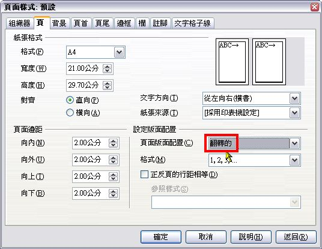
圖10：在頁面設定內的「頁面版面配置」內，有個選項是「翻轉的」。頁面怎麼可能設定成可以翻轉呢？經過測試後，才知道原來是設定成便於裝訂的左右對頁的形式。我想，這應該是直譯的緣故吧！
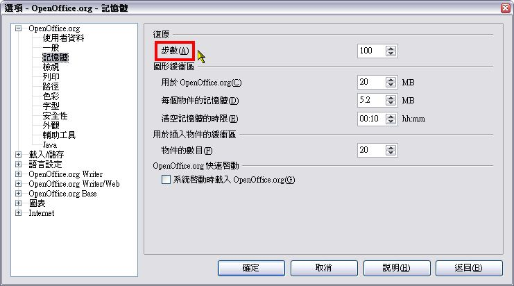
圖11：選項設定內的「復原」，用的詞是「步數」。通常的習慣應該是「次數」，也就是允許使用者可以進行多少次的復原。我對於簡體中文的用法沒有研究，不知道這是直譯還是使用習慣的問題。
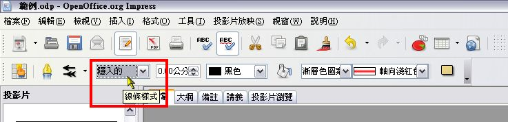
圖12：在 Impress 設定圖案的框線時，「線條樣式」的選項中，有個叫「隱入的」，第一次看到時，真的不懂，也猜不出來。從設定後的效果來看，才知道它的意思應該是「隱藏」、「無線條」或是「透明」。
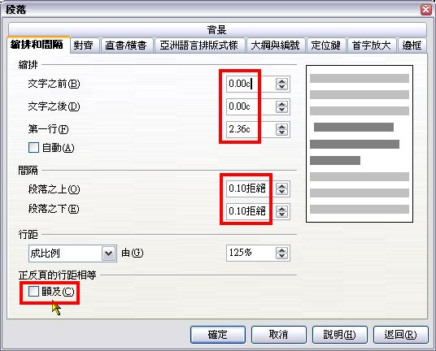
圖13：在段落的設定中，底下有個選項叫「顧及」，意思雖然不難懂，但到底是什麼作用，則完全不知道。直到完稿時，筆者也不曉得在什麼樣的情形時該用這個選項，說明檔內也沒有詳細的說明。至於「縮排」內的「c」和「間隔」內的「拒絕」，參考英文版的軟體，分別是「ch」和「line」，前者當是指「字元」，後者是「行」（應當是檔案的錯誤吧！）
2. 需要整體規劃：不論是自由軟體或商業軟體，總是針對某特定應用所設計，不可能針對學校的教學課程，做一有系統的設計。因此，我們必須針對整體的教學內容，篩選出合適的自由軟體，組成一完整的教學和應用組合，讓教學和應用能相得益彰，並且要協助學校建置教學環境，如區域網路的架設和相關伺服器軟體的設定等，不是任由學校老師自行發展。另外還得重新檢討各個軟體中文化的內容是否合適，必要時就加以修正，好符合繁體中文使用者的習慣。至於這些事該由誰來做呢？當然是政府單位。而我心目中的理想對象是 OSSF。至於教育部……本人不予置評。
第三，課程設計應該以實用優先，其次才是趨勢和興趣。
想要培養資訊處理及其應用能力，最重要的還是要有練習的機會。而這樣的機會，最好是生活中俯拾可得，如果刻意而勉強去練習，一旦課程結束後，將會因為沒有練習機會而忘光。（像筆者很少進行影像處理，所學的進階技巧幾乎忘光光，會用的只有基本技巧）
另外，資訊科技的變化很快，但真正有劃時代的概念並不多，不必因為新產品出現而修改課程，而是在實用之外，根據應用趨勢和學生的興趣等因素，讓課程內容不斷地「進化」。
第四，培養資訊安全的相關常識。
資訊安全（以下簡稱資安），是電腦和網路應用中一個重要而基本的議題，因為它所影響的層面不只是自身而已，還包含網路上不特定的人（可能極多，也可能很少）。像殭屍電腦網路，受害者本身常常不知道自己不只是可憐受害者，還是可怕的幫凶！所以注意資安問題，不光是為了獨善其身而已，也是為了整體資訊應用環境的安全可靠，讓大家都能安心使用資訊科技。（其實不只是電腦使用者，使用其他能透過網路交換資訊的設備如手機、電子書等，都可能面臨相似的問題）
然而目前的課程中，對於資訊安全的內容相當少，在分段能力指標內只有四項，也就是：1-2-5 能瞭解資料安全的維護並能定期備份資料。1-3-1 能認識電腦病毒的特性。4-3-4 能認識網路資料的安全防護。5-4-4 能認識網路犯罪類型。至於該如何防範，則沒有任何建議。
雖然資安的危害類型不斷地改變和增多，防護方法也跟著推陳出新，但無論怎樣改變，總有最基本的處理原則可依循。如安全軟體和設備的使用、固定更新的必要、檔案或資料來源的可靠性驗證、資料交換對象的驗證、檔案資料的備份、加密和銷毀之必要……等，都是該注意的基本常識。
第五、網路隱私的基本認識。這一項其實也可歸類在前項的資安內，不過這裡我要強調的是使用者本身對於網路隱私的認識，不只是單純的資安問題。目前網路商業活動已經相當普遍，進行此類活動往往都需要身份資料的認證，因此，竊取個人隱私資料，遂成為有利可圖的地下經濟。
然而，一般的國中小資訊教材，大多強調網路的便利性和優點，對於相對的缺點則鮮少提及，更別說是防範的方法。甚至以往學校還有鼓勵學生公開隱私的情形。怎麼說呢？教育部曾有一陣子很鼓勵網站的架設，希望各中小學能教學生架設網站，當時流行的是架設個人網站，但是中小學的學生本身能有什麼資訊可以分享？於是就把自己和家人的各種資料，如地址、家庭成員的基本資料、爸媽的工作是什麼……等都放上網，讓自己和家人的隱私在網路世界一覽無遺。（所以我常跟朋友說，要找別人的隱私資料不需要學會駭客的手段，透過搜尋引擎一點都不難）
這些就變成行銷人員、偽造信用卡集團、詐騙集團的資訊來源之一。雖然目前多數的學校已經不鼓勵學生架設自己的網站，而是改為架設班級網站或者部落格，但對於隱私方面的觀念如果不改，還是會存在著重大風險（為了取信被害人，還是可以利用班級的資料）。此外，社會各界過度渲染網路成名和賺錢的快速性，導致許多學生在學會架設網站或部落格之後，為了讓自己成名，往往不考慮後果（除了隱私曝光之外，還包括許多法律問題），只求流量能衝高，什麼任何光怪陸離的東西都可能會被學生放上網路。結果受害的不只是自己，也可能是家人。
網路的散佈效果，具有超快速和極大化的特性，其優點對於好事和壞事的助力都具有同樣的威力，事情一旦發生，往往不可收拾。而且資料一旦上網之後，想要從網路世界徹底清除，幾乎是一件不可能的事情！因此在網路上把隱私曝光，到底是分享歡樂或讓大家看到你的才華，還是引來危險？這往往只是一線之隔，這些議題都該有機會讓學生好好思考！
◎ 結語
資訊科技的重要，想必沒有人會加以否認，其對人類的影響，毋庸置疑是重大且深刻。因此推行資訊教育，是任何國家都不會忽視的一環。只是資訊科技的進步神速非凡，衍生的各種議題，總是令人目不暇給，常常是前一個還沒解決，後一個就已經誕生；有些容易解決（軟硬體問題），有些則近乎無解（網路的法律秩序和安全）。因此很多老師會覺得：資訊教育真的很難教！因為昨是今非的情形，在資訊科技的領域一點都不是新鮮事！
即使如此，我們仍然不可因噎廢食，就此讓資訊教育萎縮到只有軟體操作教學！畢竟這影響的不只是國家競爭力、經濟發展力而已，還牽涉到個人能否在社會上和其他人競爭（就算當農夫種田，也要上網查看看哪種作物價格比較好，市場預測和最新技術，以免入不敷出）。因此我們有必要根據時勢潮流的發展，不斷地修正資訊教育的內容，讓學生真正擁有資訊科技的應用能力！
專欄總覽


E-Mail：contact@openfoundry.org Address：台北市南港區研究院路2段128號 中央研究院資訊科學研究所 . 隱私權條款. 使用條款